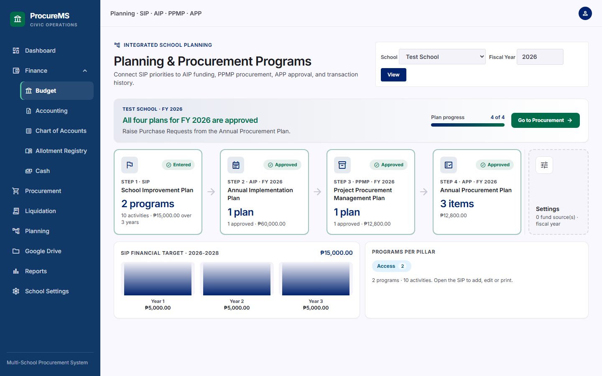
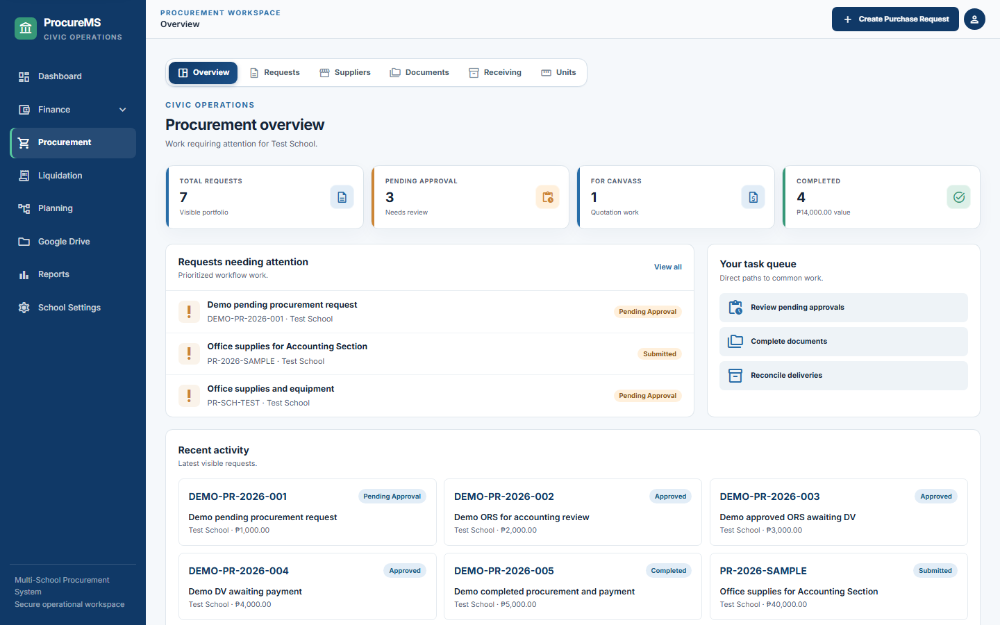
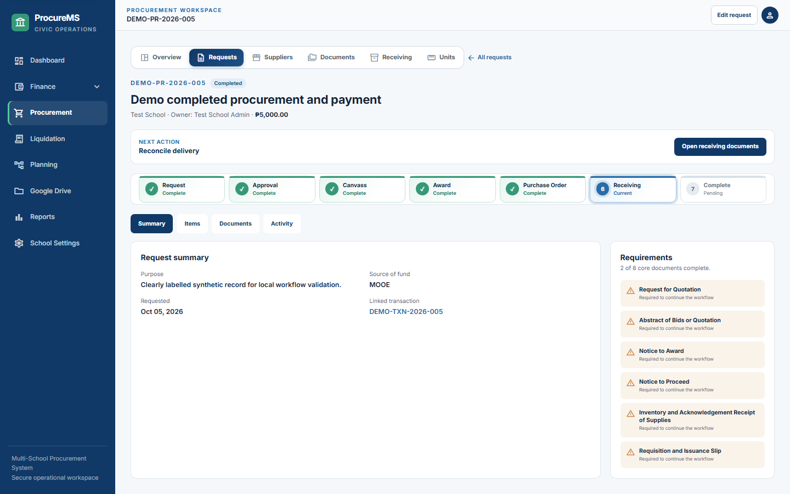
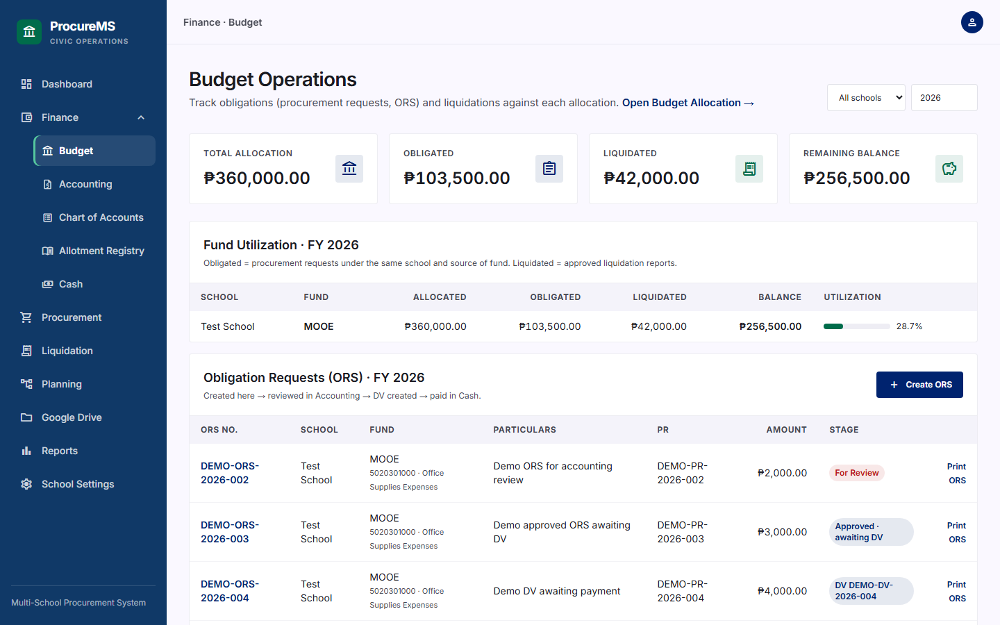
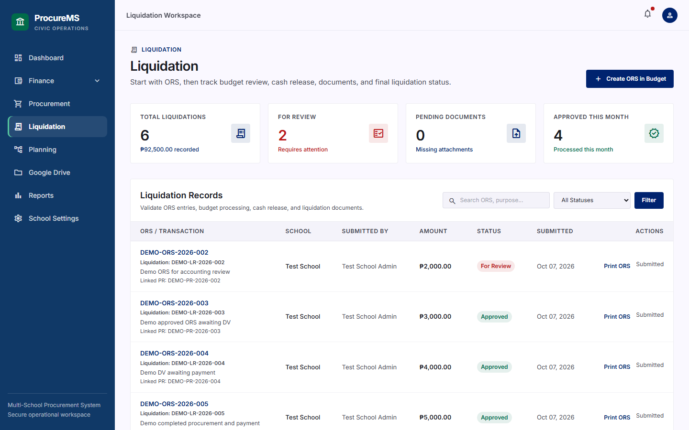
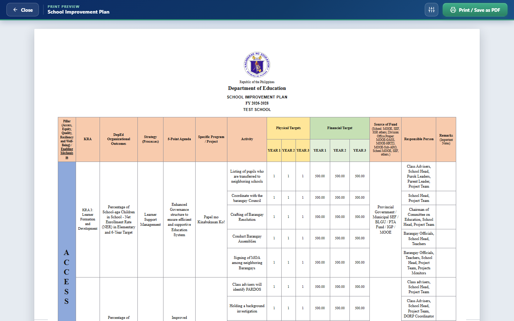

Trace the source
Open a purchase and see the plans, approved items, and budget line behind it.
Built for school procurement teams
From the SIP and AIP to procurement, payment, and liquidation, ProcMS keeps the records behind a purchase together. See where the budget came from, what was approved, and what happened next.
No sign-up needed Sample data only Resets daily
Why teams use ProcMS
Open a purchase and see the plans, approved items, and budget line behind it.
Review allotments, obligations, and payments alongside the funds still available.
Prepare the forms and reports your team needs from records already in the system.
Free to test
Explore sample schools, a sample budget, a connected plan chain, and open requests. Add records, try approvals, and print forms in the demo.
https://procurems-demo.up.railway.appdemo@gmail.compasswordSign in as the administrator of a sample school. Use sample data only.
Modules
What is already in the system works in the demo today. What is for development is being built next.
Planning / SIP
Enter the school's plan on the official template. Approving the AIP creates the budget lines; the procurement plan and every purchase request trace back to it.
Finance
Allotments are tracked by fund source, account code and quarter, and every obligation and payment is checked against the balance that is left.
Liquidation
Each liquidation report is tied to the purchase request and the budget line it spent, so reviewers see the whole story on one screen.
Reports
Every official form prints from one engine, with a paper-size toolbar, so a school never rebuilds a form in a word processor.
Snapshots
Real screens from the demo account, with its sample school and sample records. Sign in and every one of them is yours to click.






Platform
A division or office can look after every school, while each school only ever sees its own records.
Records belong to one school. A user can never read or change another school's data.
The master sees everything. A Sub-master gets only the areas ticked on a checklist, and deleting needs its own switch.
New users ask to take over a vacant school, transfer, or send any other request. The master approves with a note.
One user, one school, one Drive. Uploads go to the user's own Drive, never someone else's.
The whole database is backed up every day at 12:00 midnight, Philippine time, with a download history.
Budget officer, accounting officer, cashier, inspector, auditor and more, each with the access that role needs.
For development
Planning / SIP, Finance, Liquidation and Reports are already in the system. This is what each one gets next, in the order the work is planned. Dates are not promised.
Contact us
Ask about the demo, a school or division setup, or what is being built next. Message us on Facebook.
Sign in to the demo, run a purchase from plan to liquidation, and print the forms. It is free, and it clears itself every night.
Open the free demoEmail demo@gmail.com · Password password